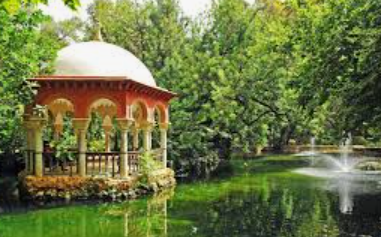

Sobre los parques de Sevilla
Sevilla no solo es historia y monumentos. También cuenta con hermosos parques que ofrecen un respiro del bullicio de la ciudad. Son lugares perfectos para relajarse, hacer deporte o disfrutar de la naturaleza.
A continuación, te mostramos algunos de nuestros favoritos ¡Prepara tu blicicleta o tu libro y ven a explorarlos!
Parque Maria Luisa
Famoso por sus glorietas y la Plaza de España. Es un lugar ideal para pasear
Más informaciónJardines de Murillo
Justo al lado del barrio de Santa Cruz, perfectos para una parada tranquila en el centro histórico
Más informaciónParque de los Príncipes
Uno de los parques más grandes de la ciudad, con un largo y zonas deportivas